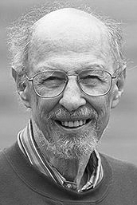

|  |
1990 год Fernando J. Corbato (1926) «За его пионерскую работу по созданию концепции и управлению разработками по созданию общецелевых, крупномасштабных компьютерных систем с разделением времени и ресурсов CTSS (Compatible Time-Sharing System) и Multics (Multiplexed Information and Computing Service)» |
Страна: США
Образование: Доктор философии в области физики, MIT, 1956
О лауреате
В 1956 F. Corbato стал членом исследовательской группы в новом вычислительном центре MIT. Многие пользователи были недовольны тем, как предоставлялся доступ к компьютерам. Компьютеры, такие как Whirlwind, могли использоваться одновременно только одним человеком, а IBM 704 в вычислительном центре был запущен в «пакетном режиме», где операторы выполняли ранее выполненные вычислительные задания. Оба подхода требовали от программиста ждать результатов несколько часов или дней, и снова ждать, если задание должно было быть повторно запущено из-за ошибки. В конце 1950-х годов была предложена новая идея под названием «система с разделением времени». Она предполагала возможность подключения нескольких пользователей к компьютеру, а тот, в свою очередь, должен был быстро переключаться между программами. В 1961 году, Corbato предложил небольшой проект на IBM 709, который демонстрировал подобные интерактивные вычисления. Вместе с B. Daley и M. Merwin-Daggett он построил первоначальную версию «Системы разделения времени» (CTSS) и продемонстрировал её в ноябре 1961 года. Он сохранял приостановленные программы на четырех магнитных ленточных накопителях, обеспечивая одновременный доступ для четырех пользователей с временным разделением, которые использовали модифицированные терминалы Flexowriter. Осенью 1963 года Project MAC приобрёл IBM 7094 и CTSS начал функционировать как общий сервис для исследовательских проектов MIT. У них в планах была разработка второго поколения CTSS, названная Multics - Мультиплексированная информационно-вычислительная служба. Она должна была стать прототипом «компьютерной утилиты», которая предоставляет услуги для вычислений и хранения большому числу пользователей. Corbato вёл разработку Multics с 1963 по середину 70-х годов.
Ключевые слова: Multics, CTSS
Краткая библиография
| 1. |
J. A. Stratton, P. M. Morse, L. J. Chu, J. D. C. Little and F. J. Corbato, Spheroidal Wave Functions Including Tables of Separation Constants and Coefficients, MIT Press, 1959. Набор таблиц сфероидальных волновых функций, предназначенных для упрощения расчета акустического и электромагнитного рассеяния от сфероидов. |
| 2. |
Corbató, F. J., M. M. Daggett, and R. C. Daley, “An experimental time-sharing system”, AFIPS Conference Proceedings, Vol. 21, pp. 335-344, 1962. Один из первых официальных документов, описывающих внедренную систему разделения времени. |
| 3. |
Corbató, F. J., M. M. Daggett, R. C. Daley, R. J. Creasy, J. D. Hellwig, R. H. Orenstein, and L. K. Korn, The compatible time-sharing system: a programmer's guide, 1st ed, MIT Press, June 1963. Руководство, в котором описаны ранние версии CTSS. |